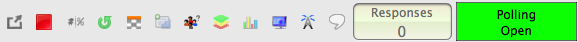
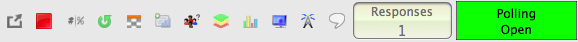
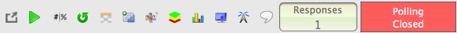

Debug.on(3)
## configure our patterns.
# STEP 0, we need to open polling.
poll_closed_no_response_old = Pattern().exact()
# STEP 2, we need to wait for a response.
poll_open_no_response_old = Pattern().exact()
# STEP 3, we have a response, close polling.
poll_opened_has_response_old = Pattern().exact()
# STEP 4 -> 1, saved response.
poll_closed_has_response_old = Pattern().exact()
# ZERO
no_response = Pattern( ).exact()
# ONE
has_response = Pattern().exact()
## This hotkey will both OPEN and CLOSE polling on Mac OSx.
def turning_point_hotkey():
type("9", Key.ALT + Key.CMD)
## This will move PowerPoint forward one slide and trigger polling to reopen.
def next_slide_and_poll():
print("next slide")
## First let's find the TurningPoint polling toolbar. This MATCH is saved as our search region.
toolbar_region = wait(poll_closed_no_response_old, FOREVER)
## Now we'll build a new region based on our first region that captures ONLY the number of responses (0 or 1)
newX = toolbar_region.getX() + 395 # since we know how big the region is we add a fixed number of pixels to X
newY = toolbar_region.getY() + 24 # since we know how big the region is we add a fixed number of pixels to Y
h_and_w = 14 # the hieght and width of our textual element is 14px...
text_region = Region(newX, newY, h_and_w, h_and_w)
# Increase the speed at which we poll the region for changes. Where scanRate(n) is equal to queries per second.
# setWaitScanRate(20) # scan 50 TPS
## DEBUG COMMANDS
# print(toolbar_region)
# toolbar_region.highlight(2)
# print(text_region)
# text_region.highlight(2)
## Functions
def haveResponse(event):
print("We have a response.")
def noResponse(event):
print("Waiting for input!")
## Now that we've set all of our regions and "know" where to scan the screen, let's begin the experiment, shall we?!
## Open polling and wait for participant.
# turning_point_hotkey()
if toolbar_region.exists(poll_closed_no_response_old, 10):
turning_point_hotkey()
# This is a SANITY check ~ we should se that polling is opened and waiting for input.
toolbar_region.wait(poll_open_no_response_old, FOREVER)
print("Waiting for input...")
text_region.onAppear(has_response, haveResponse)
text_region.onAppear(no_response, noResponse)
# text_region.onVanish(no_response, haveResponse)
text_region.observe(FOREVER)
# The participant has responded, wait, then close polling.
#if text_region.exists(has_response, FOREVER):
# print("Participant has 1 second to change their answer")
# sleep(1) # give the participant opportunity to change their response.
# print("Participant no longer has time to change their answer.")
# turning_point_hotkey()
#if toolbar_region.wait(poll_closed_has_response_zoom):
# print("WE HAVE A RESPONSE AND POLLING IS CLOSED!!!")
).exact()
# ONE
has_response = Pattern().exact()
## This hotkey will both OPEN and CLOSE polling on Mac OSx.
def turning_point_hotkey():
type("9", Key.ALT + Key.CMD)
## This will move PowerPoint forward one slide and trigger polling to reopen.
def next_slide_and_poll():
print("next slide")
## First let's find the TurningPoint polling toolbar. This MATCH is saved as our search region.
toolbar_region = wait(poll_closed_no_response_old, FOREVER)
## Now we'll build a new region based on our first region that captures ONLY the number of responses (0 or 1)
newX = toolbar_region.getX() + 395 # since we know how big the region is we add a fixed number of pixels to X
newY = toolbar_region.getY() + 24 # since we know how big the region is we add a fixed number of pixels to Y
h_and_w = 14 # the hieght and width of our textual element is 14px...
text_region = Region(newX, newY, h_and_w, h_and_w)
# Increase the speed at which we poll the region for changes. Where scanRate(n) is equal to queries per second.
# setWaitScanRate(20) # scan 50 TPS
## DEBUG COMMANDS
# print(toolbar_region)
# toolbar_region.highlight(2)
# print(text_region)
# text_region.highlight(2)
## Functions
def haveResponse(event):
print("We have a response.")
def noResponse(event):
print("Waiting for input!")
## Now that we've set all of our regions and "know" where to scan the screen, let's begin the experiment, shall we?!
## Open polling and wait for participant.
# turning_point_hotkey()
if toolbar_region.exists(poll_closed_no_response_old, 10):
turning_point_hotkey()
# This is a SANITY check ~ we should se that polling is opened and waiting for input.
toolbar_region.wait(poll_open_no_response_old, FOREVER)
print("Waiting for input...")
text_region.onAppear(has_response, haveResponse)
text_region.onAppear(no_response, noResponse)
# text_region.onVanish(no_response, haveResponse)
text_region.observe(FOREVER)
# The participant has responded, wait, then close polling.
#if text_region.exists(has_response, FOREVER):
# print("Participant has 1 second to change their answer")
# sleep(1) # give the participant opportunity to change their response.
# print("Participant no longer has time to change their answer.")
# turning_point_hotkey()
#if toolbar_region.wait(poll_closed_has_response_zoom):
# print("WE HAVE A RESPONSE AND POLLING IS CLOSED!!!")